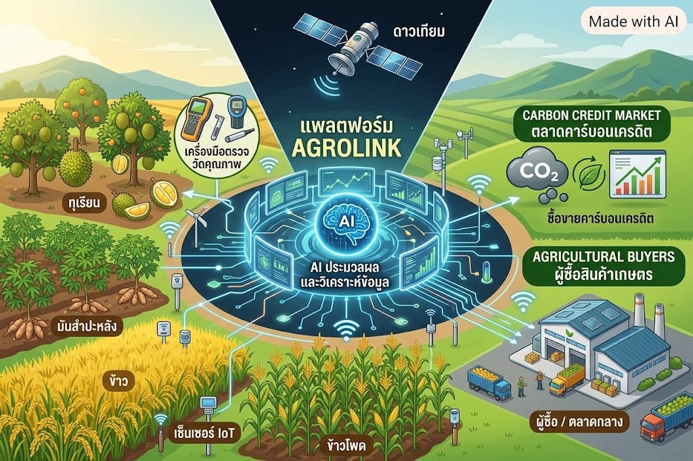

ครบทั้งข้อมูลแปลง ดาวเทียมติดตามแปลง ปุ๋ยสั่งตัด สินเชื่อเป็นงวด ตลาดขายผลผลิต และรายได้เสริมจากคาร์บอนเครดิต ในที่เดียว — ใช้งานฟรี สมัครง่าย เริ่มต้นได้ในไม่กี่นาที

แพลตฟอร์มเดียวที่รวมข้อมูลแปลง ดาวเทียม การเงิน ตลาด และรายได้เสริม ไว้ให้เกษตรกรจัดการได้ด้วยตัวเอง
ลงทะเบียนแปลงพร้อมปักขอบเขต GPS บนแผนที่ดาวเทียม ระบบคำนวณพื้นที่โดยประมาณให้อัตโนมัติ เก็บเป็นข้อมูลอ้างอิงของท่านเอง
ดูดัชนีพืชพรรณ (NDVI) และคาดการณ์ผลผลิตล่วงหน้า ใช้ประกอบการตัดสินใจดูแลแปลงและวางแผนขาย
ยื่นคำขอสินเชื่อที่เบิกจ่ายเป็นงวดตามความต้องการใช้เงินของแต่ละช่วงการปลูก ลดภาระดอกเบี้ยเมื่อเทียบกับเงินกู้ก้อนเดียว
เข้าถึงตลาดขอใบเสนอราคา (RFQ) ประกาศรับซื้อด่วน และการประมูลราคา เพื่อเปรียบเทียบและเลือกช่องทางขายที่ได้ราคาดีที่สุด
คำนวณสูตรปุ๋ยให้เหมาะกับพืชและดินของท่าน รวมกลุ่มสั่งซื้อปุ๋ยกับเกษตรกรรายอื่นเพื่อต่อรองราคาส่ง และใช้บริการผสมปุ๋ยสั่งตัด
ยืนยันการทำเกษตรแบบคาร์บอนต่ำ เช่น การทำนาเปียกสลับแห้ง (AWD) หรือการงดเผาเศษวัสดุ เพื่อสร้างรายได้เสริมจากคาร์บอนเครดิตในอนาคต
หลังสมัครสมาชิก เกษตรกรผู้ปลูกพืชจะเข้าถึงบริการเหล่านี้ได้ทันทีจากหน้าหลักเกษตรกร
ปักขอบเขต GPS บนแผนที่ดาวเทียม ระบุพืชหลักและฤดูกาลปลูก
ดูหน่วยงาน (สหกรณ์/ผู้ปล่อยกู้/กองทุนหมู่บ้าน) ที่ท่านเป็นสมาชิกอยู่ในที่เดียว
ติดตามคะแนนความน่าเชื่อถือทางสินเชื่อและประวัติย้อนหลัง
เลือกผู้ให้สินเชื่อ ระบุวงเงินและวัตถุประสงค์ ยื่นคำขอผูกกับแปลงของท่านได้โดยตรง
ดูสถานะสัญญาที่ทำกับสหกรณ์ ผู้ให้สินเชื่อ หรือผู้รับซื้อ
ไม่พลาดข่าวสารสำคัญจากหน่วยงานที่เกี่ยวข้องกับบัญชีของท่าน
ให้ผู้ซื้อยื่นข้อเสนอราคารับซื้อผลผลิตของท่านโดยตรง
ติดตามประกาศรับซื้อผลผลิตแบบเร่งด่วนจากผู้รับซื้อที่เข้าร่วม
เสนอขายผลผลิตผ่านระบบประมูลเพื่อให้ได้ราคาสูงสุด
ดูราคารับซื้อจากหลายแหล่งเพื่อประกอบการตัดสินใจขาย
เลือกซื้อปัจจัยการผลิตที่จำเป็นสำหรับรอบผลิตของท่าน
คำนวณสูตรปุ๋ยที่เหมาะสมกับพืชและสภาพดินของท่าน
สั่งผสมปุ๋ยสูตรเฉพาะตามผลคำนวณ ไม่ต้องผสมเอง
รวมออเดอร์กับเกษตรกรรายอื่นเพื่อต่อรองราคาซื้อในปริมาณมาก
ยืนยันการทำนาแบบเปียกสลับแห้งหรือการงดเผาเศษวัสดุ เพื่อเตรียมสร้างรายได้จากคาร์บอนเครดิต
จองบริการเครื่องจักรกลการเกษตรตามช่วงเวลาที่ต้องการใช้งาน
สมัครฟรี ใช้เวลาไม่กี่นาที ไม่ต้องมีเอกสารสิทธิ์ที่ดินก็เริ่มลงทะเบียนได้
กรอกข้อมูลพื้นฐานเพื่อเปิดบัญชีผู้ใช้งาน:
หลังสมัครสำเร็จ เข้าสู่ระบบด้วยเบอร์โทรศัพท์ที่ลงทะเบียนไว้ เพื่อเริ่มใช้งานพอร์ทัลเกษตรกร
บันทึกข้อมูลแปลงของท่าน (ไม่บังคับว่าต้องทำก่อนใช้บริการอื่น แต่แนะนำให้ทำเพื่อใช้สิทธิ์ครบทุกบริการ):
เข้าสู่หน้าหลักเกษตรกร ดูภาพรวมบัญชี สมาชิกภาพ คะแนนความน่าเชื่อถือ แปลง สัญญา คำขอสินเชื่อ และเข้าถึงตลาด/บริการทั้งหมดที่กล่าวถึงด้านบนได้จากเมนูเดียว
สมัครสมาชิกฟรีวันนี้ เริ่มบันทึกข้อมูลแปลง เข้าถึงแหล่งเงินทุน และเปิดช่องทางขายผลผลิตของท่าน